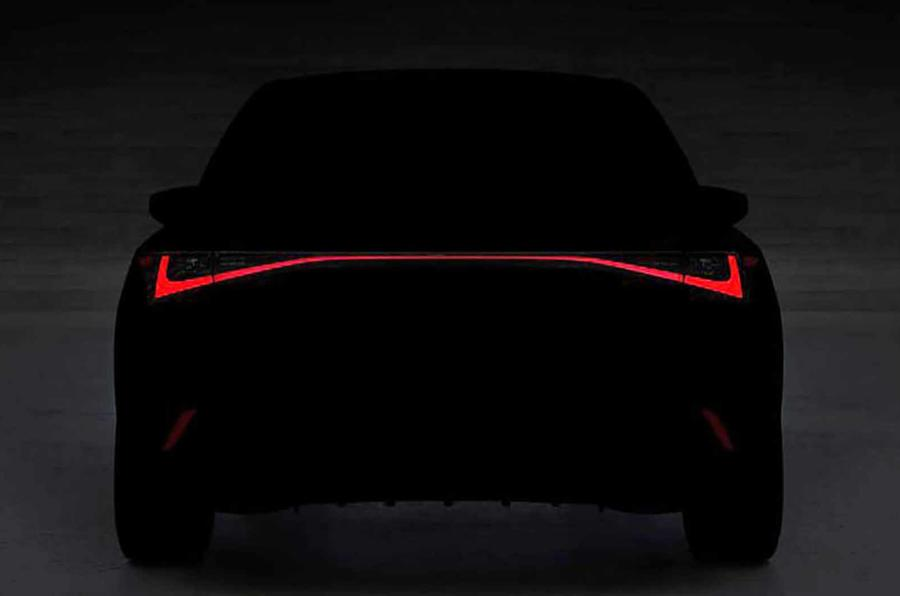
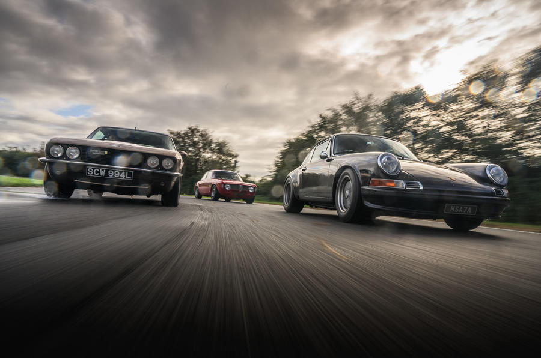
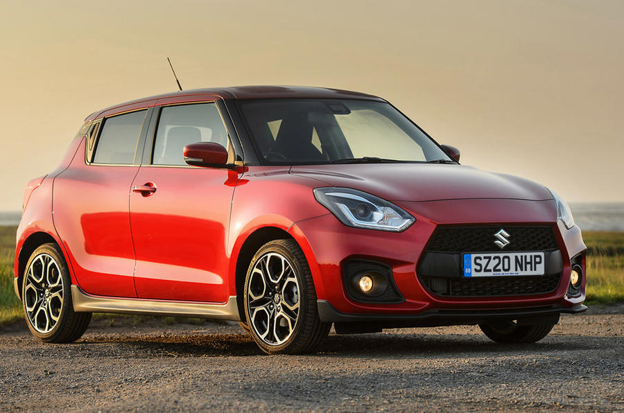
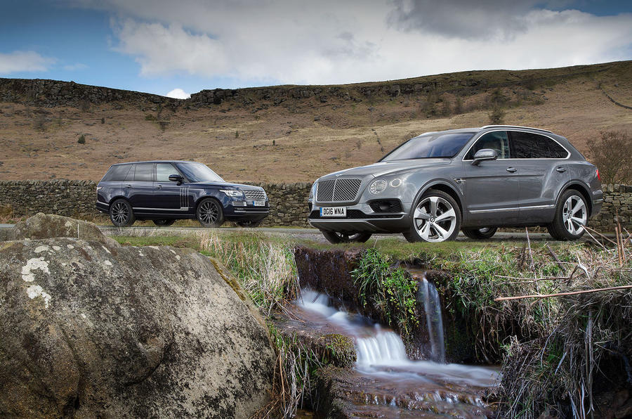

;
;
;
;
|  | Lexus has released a preview image of the new IS saloon ahead of its unveiling next week. The low-resolution, darkened shot, posted on the brand's Facebook page, shows the rear end of the new BMW 3 Series rival and reveals it features a full-width lighting strip, much like the UX crossover. The post also reveals an unveiling date of 9 June for the new model. However, Autocar has been told that the model won't be sold in either the European market or the UK. The IS has been offered here in its previous three generations, but sales have fallen in the face of the booming SUV market and newer range arrivals. Lexus shifted 3282 examples in 2019 - nearly half the number sold in 2016. A Lexus UK spokesperson said: "Roughly 80% of all Lexus models sold in Europe are SUVs and the larger ES is outselling the current IS at a rate of around two-to-one, so we made the decision not to introduce this new model to the UK market." Technical details for the new IS are thin on the ground. Without the tough European Union efficiency regulations to worry about, there may be less of a pressing need for plug-in hybrids or electric versions, so we expect it will make use of Lexus's tried-and-tested parallel hybrid powertrain in launch variants. |
|  | They’re a new kind of performance car, if you like; all that modern supercars are not. They bring performance down to approachable levels but keep the craftsmanship and desirability sky high. At least, that’s how I imagined it. So here we are, at Llandow Circuit, south Wales, with three of the best of them. The idea is to have a track drive today and a road blast tomorrow, with some boring everyday driving in between. All three cars do things differently. The smallest here is branded GTA-R by its specialist builder, Alfaholics. It’s a GTA-aping Alfa Romeo that can be based on any 105/115-series coupé – this one started as a 1967 1300 GT Junior. Alfaholics can simply restore one of those for you but, if you tick the full gamut of GTA-R options, you’ll spend the best part of £300,000 and have the kind of car you see here, with a 12-point roll-cage, seam-welded monocoque, titanium suspension bits, Alfaholics gearbox internals and a twin-cam, twin-spark four-cylinder engine originally from a 75, bored and stroked to 2.3 litres, fitted with lightweight internals and making 240bhp. The car weighs just 830kg. |
|  | The two crossover models are priced from £21,749 for the Vitara and £20,749 for the S-Cross. The Swift Sport is priced from £21,570, although all three are being offered from launch with 0% PCP deals. That is now the only powertrain option available on Suzuki's hatchback, with the brand seeking to meet upcoming emissions regulations. It uses a 48V set-up alongside a reworked version of the outgoing car's 1.4-litre turbocharged four-cylinder petrol engine. The new powertrain generates 127bhp, down 11bhp on the outgoing model, although torque increases by 3lb ft to 173lb ft. The result is a quoted 0-62mph time that reduces by a second to 9.1sec, although the Swift Sport claims the same 130mph top speed as before. The mild-hybrid system helps to generate a higher level of torque lower in the rev range, it is claimed. Efficiency increases are promised, and although the 50.1mpg quoted is little different to the outgoing car, that was measured under the older, less realistic NEDC economy test cycle. |
|  | And if you’re going to do it in any Range Rover, might I recommend one of these newfangled SVAutobiography models? It’s the slightly awkwardly named recognition that people with an unmentionable amount of money don’t always want to be seen in a supercar or what might be mistaken for an airport limousine. They might be prepared to spend an incredible amount on a 4x4. This seems blindingly obvious now, but until recently, it’s as if there has been a cap on the money an SUV can ask. But like Roger Bannister breaking the four-minute mile, once somebody does it, everyone realises they can. Hence the Bentley Bentayga, which had been a quietly mooted, should-we-shouldn’t-we project at Bentley Motors until Wolfgang Dürheimer arrived as Bentley’s gaffer (the first time) in 2011 and just told them to get on with it. He’d seen what the Cayenne had done for Porsche. The following year, we all took a deep breath and a step backwards when he pulled the covers off the EXP 9 F concept at the Geneva motor show; even Dürheimer talking to a bloke with a falcon on his arm couldn’t quite distract from its face. |